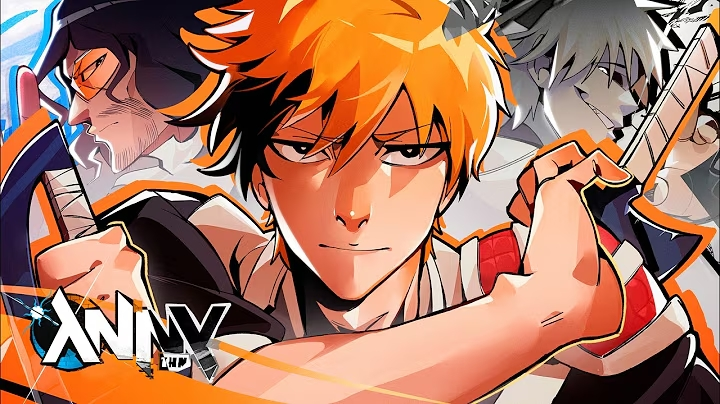

Um dos aspectos que mais chama atenção em MUGETSU é a maneira como os
três artistas participam da música. Durante grande parte da faixa, Anny, Ark. e
TakaB cantam separadamente, apresentando suas próprias partes. Porém,
próximo ao final, suas vozes se unem no refrão, criando uma sensação
reconfortante de união entre os três.
Essa mudança pode ser interpretada como uma representação da aceitação das
diferentes partes que formam Ichigo. Em Bleach, Ichigo passa por um longo
processo de compreensão de seu próprio poder e, posteriormente, reconhece que as
diferentes manifestações presentes em seu mundo interior são partes de si mesmo.
Assim, a união das três vozes pode representar simbolicamente esse momento de
aceitação e integração.
Outro elemento importante nessa interpretação é a chuva presente no mundo
interior de Ichigo. A própria história estabelece uma relação entre a chuva e o
estado emocional do personagem: quando seu coração está perturbado ou ele sofre,
seu mundo interior é tomado pela chuva.
Dessa forma, o encerramento da música pode ser interpretado como uma
resolução desse conflito. Assim como as vozes dos três artistas deixam de estar
separadas e passam a cantar juntas, a chuva que representa o sofrimento e o
conflito interior de Ichigo também pode simbolizar o fim dessa divisão. A união,
nesse contexto, representa aceitação, compreensão e paz interior.
O significado de Mugetsu é "Céu Sem Lua" ou "Noite Sem Lua", além de ser
um termo japonês frequentemente utilizado para descrever uma noite sem lua. Em
Bleach, esse termo é o nome de uma técnica utilizada por Ichigo Kurosaki, sendo
uma de suas técnicas mais poderosas. Seu aspecto mais marcante é o fato de que,
ao utilizar a técnica, Ichigo sacrifica seus poderes em troca de um enorme
aumento de poder durante alguns minutos. Esse elemento é especialmente
relevante para a música, pois está diretamente relacionado aos conceitos de
determinação e sacrifício, que também podem ser percebidos ao longo da obra.
Após o lançamento, a artista falou sobre o projeto e demonstrou estar muito feliz
com o resultado. Ela descreveu MUGETSU como algo "confortável" e
"sentimental", além de dizer que gostaria que a música transmitisse uma
sensação de acolhimento para quem a estivesse ouvindo.
Isso mostra que, para Anny, MUGETSU não foi apenas mais um lançamento
relacionado à cultura geek. A música também representou uma experiência
pessoal e emocional, na qual ela conseguiu apresentar a obra da maneira que
desejava.
A própria divulgação oficial confirma que a música foi lançada como Anny feat.
Ark. e TakaB, reforçando a participação dos três artistas no projeto.
A partir do que Anny declarou, podemos interpretar que a música busca transmitir
uma sensação diferente daquela que poderia ser esperada apenas pelo conceito de
Bleach. Apesar de possuir uma referência a um momento marcado por poder e
sacrifício, a artista descreveu a obra através de palavras como confortável,
sentimental e acolhedora.
A música está disponível em plataformas digitais e no YouTube. A página oficial
da Anny no Spotify lista MUGETSU entre seus singles de 2026, com Anny, Ark.
e TakaB creditados como artistas.
Ouça MUGETSU no Youtube
Ouça MUGETSU no Spotify
Ouça MUGETSU no Apple Music